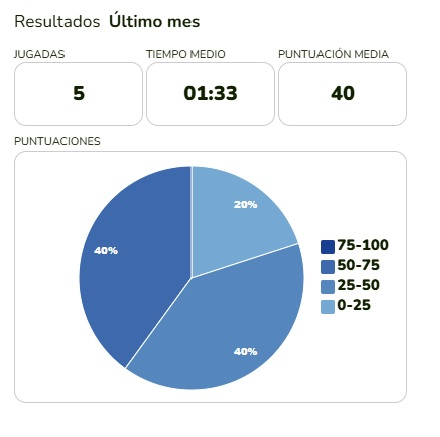
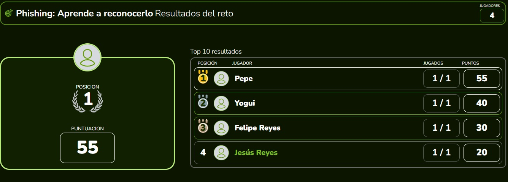
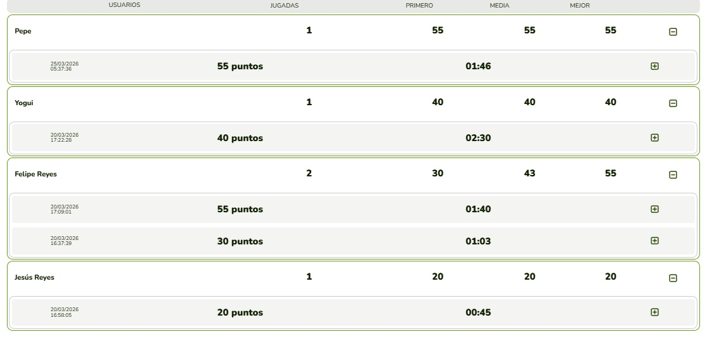
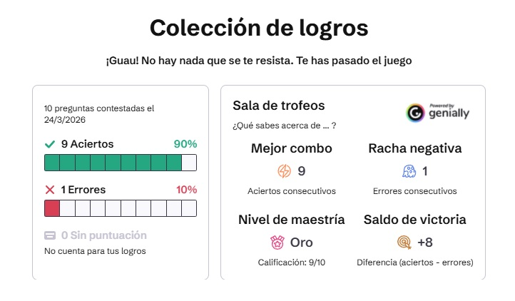

En cada una de las plataformas usadas, se obtuvieron datos, los cuáles son de gran ayuda, ya que con ello, se puede percibir acerca de las estadisticas de las personas en el mundo virtual. Sí conocen acerca de los riesgos que existen.
El porcentaje de las personas que saben identificar un mensaje de dudosa procedencia y como evitar caer en ellos.
A su vez, las maneras en las que se puede prevenir o disminuir el robo de información sensible de las personas.
En cuanto a las personas que nno están muy informadas, se tratará de darles la información de una manera que sea entendible para ellas, con ello, se podrán extender las medidas de seguridad a más personas.
Prevenirlo, es de suma importancia, la concientización de los usuarios, ya que la vulnerabilidad humana sigue siendo el eslabón más débil en la seguridad digital.

Esta gráfica representa las jugadas hechas por 4 ususarios diferentes, en donde se puede ver el tiempo promedio de los 4. De los 4 jugadores, el 40% tenía conocimientos del PHISHING en un rango del 75% - 100%. El otro 40% de los jugadores, tienen conocimientos entre el 25% - 50% del tema. Mientras que el otro jugador, no tenía mucho conocimiento acerca del tema, ya que su porcentaje fue del 20%, lo que inidica que su conocimiento está entre el 0% y 25%.

Esta gráfica muestra el nombre de los jugadores, el puntaje obtenido y las veces en que realizó el reto.

Esta gráfica muestra con más detalle acerca del puntaje de los jugadores del reto. Puede dar clic derecho, en seguida: ver en una pestaña nueva para poder observar mejor la información.

Los datos obtenidos de GENIALLY, se muestran cada vez que un usuario realiza el reto, dando información acerca de su conocimiento, de una forma más resumida.